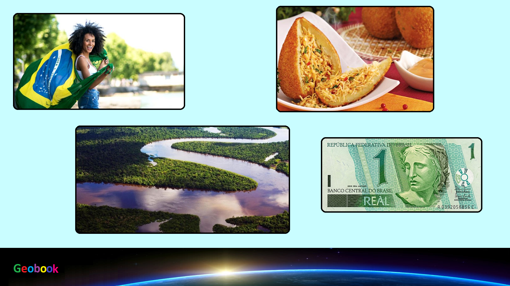

____
Традиционная еда
Пато но тукупи — типичное для региона Амазонки блюдо. Состоит оно из кусочков утки, сваренной в густом соусе, с добавлением трав. Это очень пекучее блюдо, так что если у вас проблемы с пищеварением, пробовать его не стоит.
Шураско — блюдо, известное в регионе Рио-Гранди-ду-Сул. Это кусочки говядины, нанизанные на металлический стержень. Их жарят на углях на открытом воздухе. Едят с соусом из помидоров, лука, перца, уксуса, оливкового масла и соли. Пастухи во внутренних районах страны готовят так целого бычка.
Фейжоада — популярное в Рио-де-Жанейро бразильское блюдо. Готовят его из черной фасоли, сушеного мяса, копченой колбасы, свинины, чеснока, перца и лаврового листа. Это блюдо подаётся в глубокой тарелке с мукой маниоки или с белым рисом.
Фарофа — жареная мука маниоки. Блюдо для бедных некогда, сегодня фарофа не считается таковым. Это сытное блюдо можно найти во многих заведениях, где его подают в качестве дополнительного или даже основного.
Такако — густой жёлтый суп с сухими креветками и чесноком. Это пряное первое блюдо популярно на побережье, вглубь страны оно не слишком распространилось. Еще один острый рецепт, который подойдет не всем.
Ватапи — блюдо из моллюсков, которые режутся или перемалываются с кусочками рыбы, варятся в масле денде с добавлением сока кокосов и кусочков хлеба.
Каруру — солёные креветки с острым соусом, приготовленным из красного перца и бразильского растения киабу. Это блюдо популярнее всего на побережье, как и другие продукты морского происхождения.
Черимойя — фрукт, вкус которого напоминает смесь вкусанескольких фруктов и ягод: ананаса, клубники, папайи, банана, манго и сливок. Это растение субтропического или мягкого умеренного климата, и в Бразилии оно весьма популярно. Мороженое с черимойей можно найти во многих ресторанах.
Джаботикаба — вечнозеленое дерево, чьи плоды растут прямо на стволе. Из них делают соки, мармелад, желе и даже вино.
____
